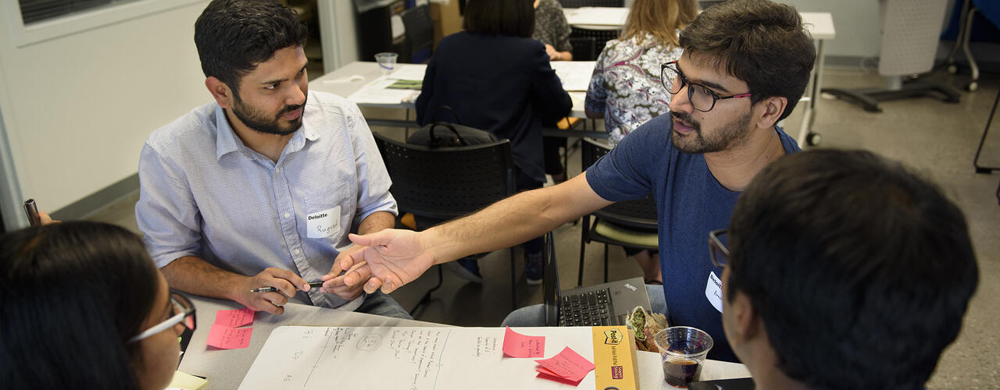
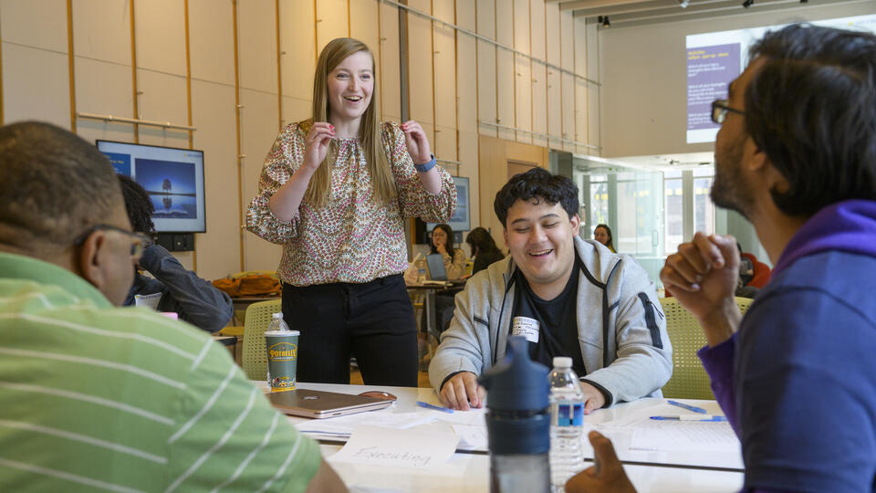

1. What is a User Experience (UX) Portfolio?
A UX portfolio is a curated collection of 3-5 UX projects, often presented as a website. It showcases your skills, process, and problem-solving abilities as a UX designer and/or UX researcher. Employers and clients use your portfolio to assess your qualifications and determine if you’re a good fit for their team or project.
Your portfolio is your opportunity to highlight your growth, creativity, and unique approach to solving user problems. A strong portfolio emphasizes your design thinking process, storytelling, and the real-world impact of your work.
Portfolio Inspiration: View student portfolios by the company they work(ed) for or the university they attend(ed) at Cofolios.
Note: These examples are for inspiration only. Do not compare yourself directly to these portfolios.
2. Gaining Experience & Showcasing UX Case Studies
Opportunities to Build Portfolio Experiences
A great way to gain UX experience and curate portfolio case studies is by pursuing opportunities such as design jams, hands-on experiential programs, and conferences.
Design Jams
- Engaged Learning Office (ELO) Design Jams: Hosted in collaboration with local organizations or specific themes.
- Business + Tech Innovation Jam: A 6-week fall semester design competition with leadership experience in a UX role. Learn more

Hands-On Experiential Programs
- UMSI Engaged Learning Office (ELO) - connects students with real-world projects, clients, and hands-on learning experiences outside the classroom
- Community-Based Opportunities - deepen understanding of societal issues and how information can be used to address them
- Entrepreneurship & Innovation Opportunities - explore startup culture, develop new ideas, and build skills in innovation and product thinking
- MDP (Multidisciplinary Design Program)-year-long program with company sponsor, student teams, and weekly meetings
3. Structuring Your Portfolio
Creating Your Portfolio Site
Choose a platform to present your portfolio. Popular options include:
Choosing a Consistent Theme
- Maintain visual consistency across pages
- Highlight your UX Design skills
- Customize templates thoughtfully to reflect your personal brand
4. Components of a Portfolio
A strong portfolio is more than a collection of project files. Each page serves a specific purpose in telling your story as a designer and researcher. Below are the key components every UX portfolio should include.
- Home Page: Your first impression. It should clearly communicate who you are, what you do, and invite visitors to explore your work. Keep it clean, focused, and visually engaging.
- About Me Page: A short introduction to your background, skills, and goals. This is where employers get a sense of your personality and what makes you unique beyond your projects.
- Case Studies: The core of your portfolio. Each case study should walk through your full design process, not just the final result. Include the following elements:
- Summary/Overview: A brief description of the project, its goals, and your role
- Timeline: How long the project took and what phases were involved
- Your Role: What you specifically contributed to the team and project
- Tools, Methods, and/or Skills: The software, research methods, and design skills you applied
- Context/Background: The problem space and why this project mattered
- Problem Statement & Questions: The central design challenge you were solving
- Research & Personas: How you gathered insights and who you were designing for
- Design Process: Your sketches, wireframes, prototypes, and iterations
- Final Design/Outcome: The finished product and any measurable impact or results
- Lessons Learned / Reflection / Conclusion: What you would do differently and what you took away from the experience
- Resume: Link directly to a PDF version of your resume so employers can download it easily without leaving your site.
- LinkedIn: Include a link to your LinkedIn profile so visitors can verify your experience and connect with you professionally.
- [Optional] Art, Graphic Design, & Additional Work: If you have creative work outside of UX, this section shows the full range of your visual skills and personal interests.
5. Revising Your Portfolio
Getting feedback is crucial to creating a strong portfolio. You can:
- Ask mentors, peers, or instructors for constructive critique
- Test your portfolio with a potential user or employer
- Iterate and refine content, visuals, and storytelling

6. Get Started
Begin building or updating your portfolio today. Explore additional resources at UMSI Portfolio Resources.